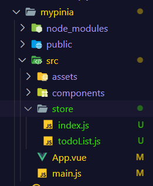
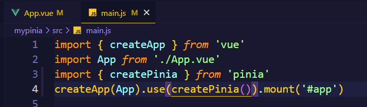
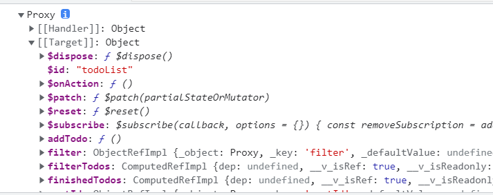
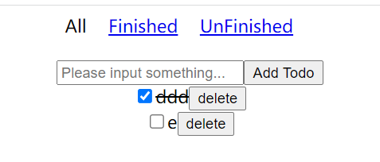
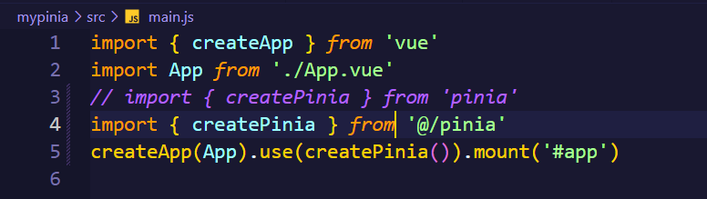
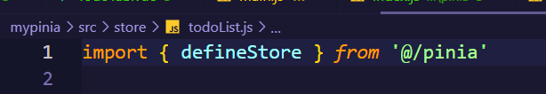
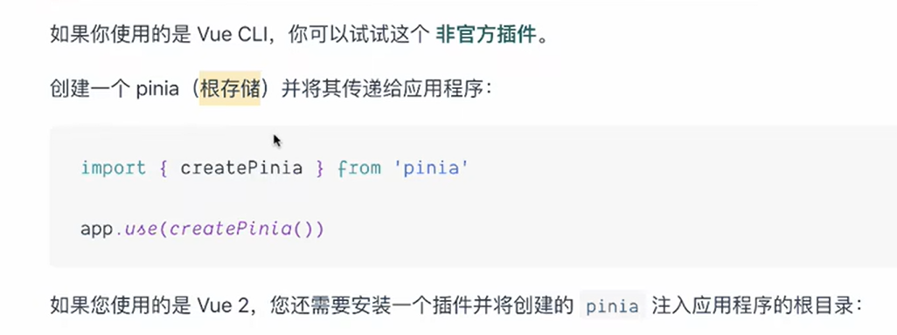

本笔记内容来自B站up前端小野森森-1的视频
创建项目
vue create mypinia
# 添加pinia依赖
yarn add pinia


store/
index.js
import useTodoListStore from './todoList'
export {
useTodoListStore
}
todoList.js
import { defineStore } from 'pinia'
export default defineStore('todoList', {
state: () => ({
todos: [], // id: number text: string isFinished: boolean
filter: 'all', // finished unfinished
nextId: 0
}),
actions: {
// 添加todo
addTodo(text) {
this.todos.push({
id: this.nextId++,
text,
isFinished: false
})
},
// 转换todo状态
toggleTodo(id) {
this.todos = this.todos.map(todo => {
console.log(this.todos)
// 找到要修改的todo
if (todo.id === id) {
// 转换状态
todo.isFinished = !todo.isFinished
console.log(todo)
}
return todo
})
},
removeTodo(id) {
// 过滤id对应的元素
this.todos = this.todos.filter(todo => todo.id !== id)
}
},
getters: {
// state=>获取这里的state返回的数据
// 获取所有已完成的
finishedTodos(state) {
return state.todos.filter(todo => todo.isFinished)
},
// 获取所有未完成的
undefinedTodos(state) {
return state.todos.filter(todo => !todo.isFinished)
},
// 获取不同状态的todos
filterTodos(state) {
switch (this.filter) {
case 'finished':
return this.finishedTodos
case 'unfinished':
return this.undefinedTodos
default:
return this.todos
}
}
}
})
app.vue
<template></template>
<script setup>
import { useTodoListStore } from "@/store";
const todoListStore = useTodoListStore();
console.log(todoListStore);
</script>
测试代码
store里的东西(filter,todos…)是ObjectRefImpl
getter里的东西(finishedTodos…)是计算属性(computedRefImpl)

先实现简单的todos程序
components/TodoList/
index.vue
<template>
<div>
<todo-tab></todo-tab>
<todo-form></todo-form>
<todos></todos>
</div>
</template>
<script setup>
import TodoTab from "./TodoTab";
import TodoForm from "./TodoForm";
import Todos from "./Todos";
</script>
<style scoped>
</style>
TodoForm.vue
<template>
<div>
<input
type="text"
placeholder="Please input something..."
v-model="inputRef"
/>
<button @click="addTodo">Add Todo</button>
</div>
</template>
<script setup>
import { ref } from "vue";
import { useTodoListStore } from "@/store";
const inputRef = ref(""); // 绑定input框
const todoListStore = useTodoListStore();
const addTodo = () => {
if (inputRef.value === "" || inputRef.value.length <= 0) {
return;
}
todoListStore.addTodo(inputRef.value); // 添加todo到全局状态
inputRef.value = ""; // 清空内容
};
</script>
<style scoped>
div {
margin-top: 20px;
text-align: center;
}
</style>
Todos.vue
<template>
<div>
<div v-for="item of todoListStore.filterTodos" :key="item.id">
<input
type="checkbox"
:checked="item.isFinished"
@click="todoListStore.toggleTodo(item.id)"
/>
<span :class="{ finished: item.isFinished }">{{ item.text }}</span>
<button @click="todoListStore.removeTodo(item.id)">delete</button>
</div>
</div>
</template>
<script setup>
import { useTodoListStore } from "@/store";
const todoListStore = useTodoListStore();
</script>
<style scoped>
div {
text-align: center;
}
.finished {
text-decoration: line-through;
}
</style>
TodoTab.vue
<template>
<div>
<a
href="javascript:;"
@click="setFilter('all')"
:class="{ active: todoListStore.filter === 'all' }"
>All</a
>
<a
href="javascript:;"
@click="setFilter('finished')"
:class="{ active: todoListStore.filter === 'finished' }"
>Finished</a
>
<a
href="javascript:;"
@click="setFilter('unfinished')"
:class="{ active: todoListStore.filter === 'unfinished' }"
>UnFinished</a
>
</div>
</template>
<script setup>
import { useTodoListStore } from "@/store";
const todoListStore = useTodoListStore();
const setFilter = (filter) => {
todoListStore.$patch({ filter });
};
</script>
<style scoped>
div {
text-align: center;
}
.active {
text-decoration: none;
color: #000;
}
a {
margin-right: 20px;
}
</style>
测试

手写pinia


猜测: pinia会创建一个根store,所有用户定义的store都会挂到该父store上

pinia/
index.js
import createPinia from './createPinia'
import defineStore from './defineStore'
export {
createPinia,
defineStore
}
createPinia.js
import { reactive } from 'vue' // 接收一个普通对象然后返回该普通对象的响应式代理(嵌套的都会被代理)
import { patch } from './apis'
export default () => {
const piniaStore = reactive({})
// 暴露操作piniaStore的方法
function setSubStore(name, store) {
if (!piniaStore[name]) {
piniaStore[name] = store
piniaStore[name].$patch = patch // 给子store添加patch方法
}
return piniaStore
}
function install(app) {
// 创建pinia实例
// 暴露piniaStore
// app.provide('piniaStore',piniaStore)
app.provide('setSubStore', setSubStore)
}
return {
install
}
}
/**
* 可以被vue实例.use的,包含这种结构
*
* {
* install (app) {}
* }
*/
defineStore.js
import { inject, reactive, toRef, computed } from "vue"
import {
createActions,
createState,
createGetters
} from './options'
// 定义store
export default (
name,
{
state, // function
getters,
actions
}
) => {
const store = {}
// 创建和挂载state
state && typeof state === 'function' && createState(store, state)
// 创建和挂载actions
actions && Object.keys(actions).length > 0 && createActions(store, actions)
// 创建和挂载getters
getters && Object.keys(getters).length > 0 && createGetters(store, getters)
return () => {
// 获取暴露的setSubStore方法
const setSubStore = inject('setSubStore')
const piniaStore = setSubStore(name, reactive(store))
return piniaStore[name]
}
}
pinia/options/
state.js
import { reactive, toRef } from "vue"
export function createState(store, state) {
const _state = state() // 指向state(一个函数),获取其返回值
store.$state = reactive(_state) // state转响应式,操作时就是操作他
for (let key in _state) {
// key in (todos,filter,nextId)
// 创建一个 ref 对象，其 value 值指向另一个对象中的某个属性
// store.key.value == store.$state.key ($state.todos)
store[key] = toRef(store.$state, key)
}
}
actions.js
/*
actions: {
// 添加todo
addTodo(text) {
this.todos.push({
id: this.nextId++,
text,
isFinished: false
})
},
...
}
*/
export function createActions(store,actions) {
for (let method in actions) {
store[method] = actions[method]
}
}
getters.js
import { computed } from "vue"
/*
getters: {
// state=>获取这里的state
finishedTodos(state) {
return state.todos.filter(todo => todo.isFinished)
},
}
...
*/
export function createGetters(store, getters) {
for (let getter in getters) {
// bind,把getter方法的this指向store.$state,并传一个参数
store[getter] = computed(getters[getter].bind(store.$state, store.$state))
store.$state[getter] = store[getter] // state.xxx
}
}
index.js
import { createState } from './state'
import { createActions } from './actions'
import { createGetters } from './getters'
export {
createState,
createActions,
createGetters
}
git仓库
https://gitee.com/malguy/mypinia
https://github.com/malred/mypinia